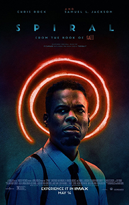
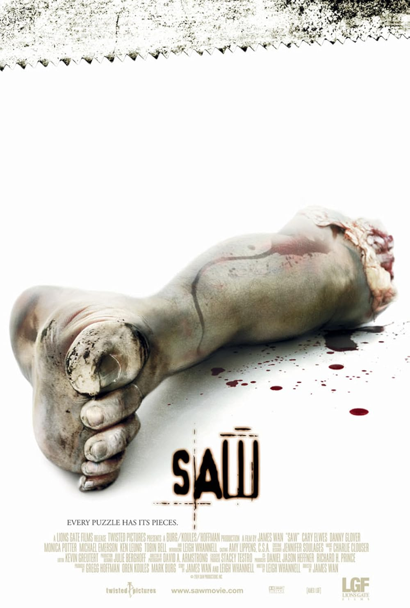

Index: Buchstabe S
Saw X (2023)
Kategorie: Uncut-Filmarchiv
Erscheinungsjahr: Wird automatisch geladen... (Online-Sync aktiv)
Regie & Crew: Kevin Greutert (Regie) | Peter Goldfinger, Josh Stolberg (Drehbuch)
Hauptdarsteller: Bell, Tobin (Jigsaw) | Smith, Shawnee (Amanda Young)
Handlung & Unzensierte Details: Inhalt wird geladen... (Automatischer Wiki-Abruf aktiv)

Spiral: From the Book of Saw (2021)
Kategorie: Uncut-Filmarchiv
Erscheinungsjahr: Wird automatisch geladen... (Online-Sync aktiv)
Regie & Crew: Darren Lynn Bousman (Regie) | Josh Stolberg, Pete Goldfinger (Drehbuch)
Hauptdarsteller: Chris Rock | Max Minghella | Samuel L. Jackson
Handlung & Unzensierte Details: Inhalt wird geladen... (Automatischer Wiki-Abruf aktiv)

Saw 3D – Vollendung (2010)
Kategorie: Uncut-Filmarchiv
Erscheinungsjahr: Wird automatisch geladen... (Online-Sync aktiv)
Regie & Crew: Kevin Greutert (Regie) | Patrick Melton, Marcus Dunstan (Drehbuch)
Hauptdarsteller: Tobin Bell | Costas Mandylor | Betsy Russell
Handlung & Unzensierte Details: Inhalt wird geladen... (Automatischer Wiki-Abruf aktiv)

Saw VI (2009)
Kategorie: Uncut-Filmarchiv
Regie & Crew: Kevin Greutert (Regie)
Hauptdarsteller: Mandylor, Costas | Smith, Shawnee | Bell, Tobin

Saw V (2008)
Kategorie: Uncut-Filmarchiv
Regie & Crew: David Hackl (Regie)
Hauptdarsteller: Mandylor, Costas | Patterson, Scott | Bell, Tobin

Saw IV (2007)
Kategorie: Uncut-Filmarchiv
Regie & Crew: Darren Lynn Bousman (Regie)
Hauptdarsteller: Lyriq Bent | Scott Patterson | Bell, Tobin

Saw III (2006)
Kategorie: Uncut-Filmarchiv
Regie & Crew: Darren Lynn Bousman (Regie)
Hauptdarsteller: Bell, Tobin | Smith, Shawnee

Saw II (2005)
Kategorie: Uncut-Filmarchiv
Regie & Crew: Darren Lynn Bousman (Regie)
Hauptdarsteller: Wahlberg, Donnie | Smith, Shawnee | Bell, Tobin

Saw (2004)
Kategorie: Uncut-Filmarchiv
Regie & Crew: James Wan (Regie)
Hauptdarsteller: Elwes, Cary | Whannell, Leigh | Bell, Tobin
